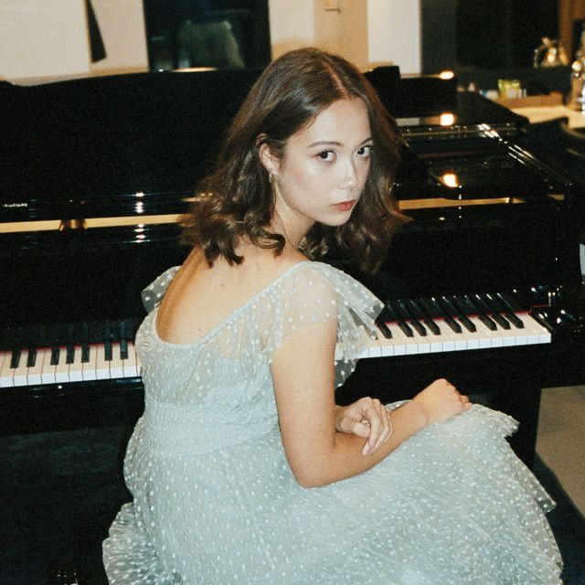
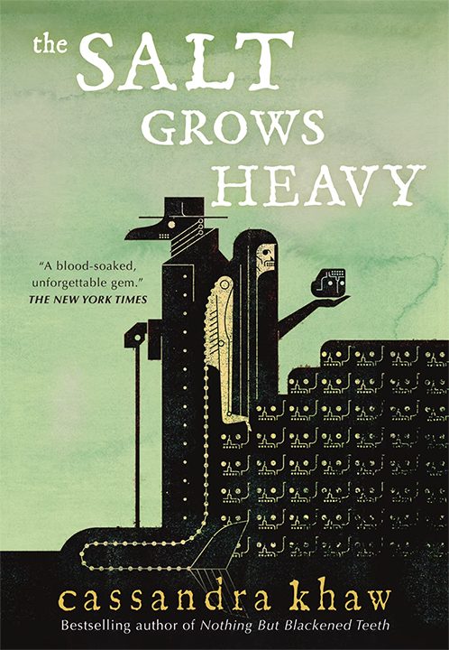
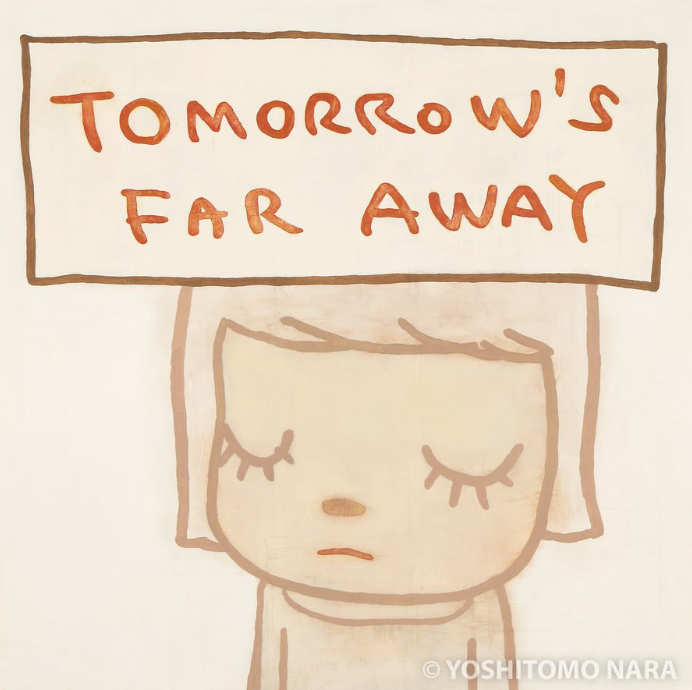

Laufey is a musician who has been testing the waters of modern jazz. I fell in love with her music a few years ago, and I highly respect her innovation while still paying tribute to originals. Her discography has a song for no matter what I'm feeling,
and I've found comfort in putting on her songs. As a musician, it is interesting to hear her interpretations of jazz standards as well.
Cassandra Khaw
WRITER

Cassandra Khaw has written many books and games, but the one that caught my attention was The Salt Grows Heavy. It is a horror novel with some romantic aspects as well.
From the first page, I was captivated by her writing. I really loved how poetic it was, despite having a lot of gory scenes. Although short, I think the book is very well written and gave me a higher standard for writing.
Yoshitomo Nara
ARTIST

Yoshitomo Nara is an artist who mainly works with painting and drawing. He utilizes painting theory to create complex paintings with layers, while his drawings mainly convey his raw emotions and thoughts.
I really love how each of his pieces radiates a different emotion. I hope to be able to captivate viewers with my work someday.